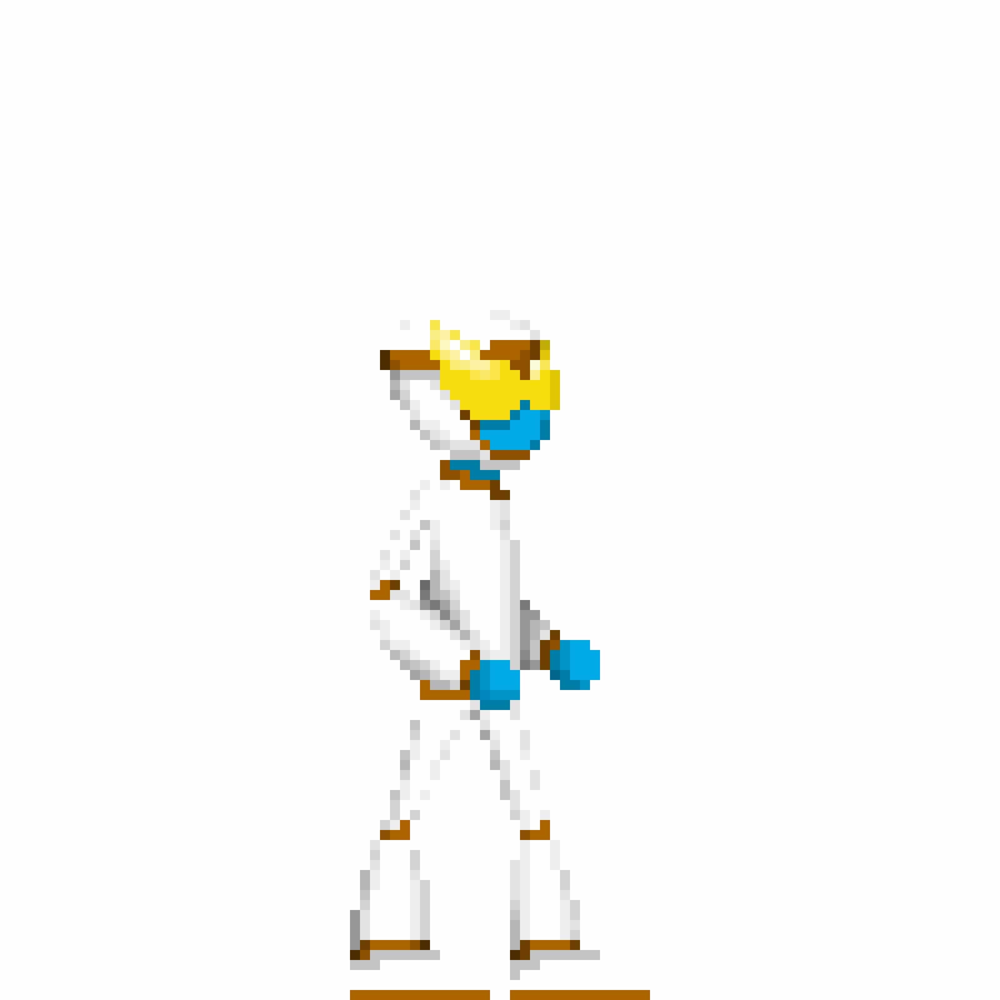

In DGA1020 we were required to practice building a sprite sheet by having a characer called "Max" perform six different functions.
The frames themselves were created through Piskel and then exported as a single sheet.

Frames of 'Max' showcasing 6 movements:
And here they are all in action:
And just like that, I had a character ready to be animated for gameplay within Unity.